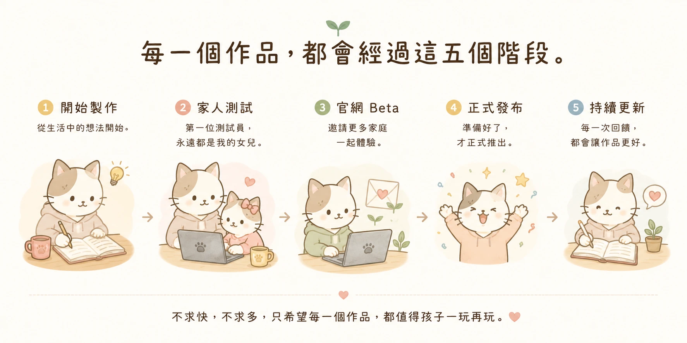

為什麼開始做 Maggie Lab
有一天我發現，與其一直擔心孩子沉迷 3C，不如開始思考：能不能做出一些真的值得孩子玩的東西？
於是開始利用 AI，把生活中的想法，做成一個個遊戲與工具。第一位測試員，永遠都是我的女兒。
目前作品

下一個作品
🏠 家人測試中
七習慣島嶼
睡前聊聊
閱讀旅程
等準備好了，就會和大家見面。
每一個作品，都會經過這五個階段。

不求快，不求多。只希望每一個作品，都值得孩子一玩再玩。
🌿 支持我們繼續創作
Maggie Lab 的作品，目前都可以免費玩。如果你喜歡這些作品，也歡迎帶一瓶 Katawu 回家。每一瓶醬料，都支持我們繼續創作下一個作品。